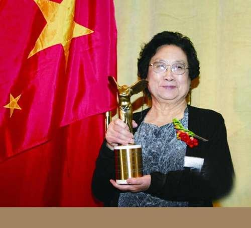

TuYouyou
Tu Yu, female, Han nationality, member of the Communist Party of China, pharmacist. Born in Ningbo, Zhejiang Province on December 30, 1930, he was admitted to Peking University in 1951 and studied in the Pharmaceutical Sciences Department of Medicine. In 1955, he graduated from the Beijing Medical College (now Peking University School of Medicine). After graduating, he received TCM training for two and a half years. He has been working at the China Academy of Traditional Chinese Medicine (renamed China Academy of Chinese Medical Sciences in 2005). He was promoted to master tutor and doctoral tutor during the period. He is currently the chief scientist of China Academy of Chinese Medical Sciences and China. Lifelong Researcher and Principal Investigator, Institute of Traditional Chinese Medicine, Director of Artemisinin Research and Development Center, Doctoral Supervisor, Pharmacist, Nobel Prize in Medicine.
1Biography
Tu Yu has been engaged in the research of Chinese medicine and Chinese and Western medicine for many years. His outstanding contribution is the creation of a new antimalarial drug, artemisinin and dihydroartemisinin. In 1972, a colorless crystal of the formula C15H22O5 was successfully extracted and named as artemisinin. In September 2011, the discovery of artemisinin, a drug used to treat malaria, saved the lives of millions of people around the world, especially in developing countries, and received the Lasker Award and the GlaxoSmithKline China R&D Center. Science Outstanding Achievement Award". In October 2015, Tu Yu won the Nobel Prize in Physiology or Medicine on the grounds that she discovered artemisinin, which is effective in reducing mortality in malaria patients. She became the first Chinese to receive the Nobel Prize in science.
Tu Yu was the first Chinese scientist to win the Nobel Prize in Science and the first Chinese scientist to win the Nobel Prize in Physiology and Medicine. It is the highest award ever won by the Chinese medical community and the highest award for Chinese medicine achievements.
On January 9, 2017, Tu Yu won the 2016 National Science and Technology Award. On December 18, 2018, the Party Central Committee and the State Council awarded the title of Comrade Tu Yu’s reform pioneer and awarded the Pioneer of Reform. In May 2019, he was selected into the Forbes China Technology 50 Women's List.
2Research experience
In 1955, he graduated from the Beijing Medical College (now Peking University School of Medicine) Department of Pharmacy, and was assigned to work at the Institute of Traditional Chinese Medicine of the Chinese Academy of Traditional Chinese Medicine (now the Chinese Academy of Traditional Chinese Medicine).
In 1956, the country culminated in the prevention and treatment of schistosomiasis. She conducted a pharmacological study on the effective drug Lobelia chinensis Lour. Later, she completed the more complex Chinese medicine S. sinensis (Stellaria dichotonia L.var.lanceolata). Biopharmaceutical research by Bge.). These two results have been successively included in the "Chinese Medicine Journal".
From 1959 to 1962, he participated in the third phase of the Western Medicine Disengagement Learning Chinese Medicine Class of the Ministry of Health, systematically studied Chinese medicine knowledge, went deep into the medicinal materials company, learned traditional Chinese medicine identification and processing technology from old medicinal workers, and participated in the summary of the processing experience in Beijing. Therefore, the authenticity and authenticity of the varieties of the medicinal materials, as well as the processing technology, have further perceptual knowledge. After the slaughter, he participated in the research work on Chinese medicine processing issued by the Ministry of Health. He is one of the main authors of the book "Experience Integration of Traditional Chinese Medicine Guns".
Beginning in January 1969, the team led by Tu Yu led the systematic collection and processing of medical books, herbal medicines and folk medicines. Based on the collection of more than 2,000 prescriptions, 640 kinds of anti-malaria single prescriptions were compiled. More than 200 kinds of traditional Chinese medicines have been experimentally researched. After more than 380 failures, using modern medicine and methods for analysis and research, and continuous improvement of extraction methods, the anti-malaria discovery of Artemisia annua L. was finally achieved in 1971.
In 1972, Tu Yu and her colleagues extracted a colorless crystal of the formula C15H22O5, an active ingredient with a melting point of 156 ° C ~ 157 ° C. They named this colorless crystalline substance as green. Artemisin. Artemisinin is a new structural type of antimalarial drug with the advantages of “high efficiency, quick effect and low toxicity”. It has special effects on various malaria, especially resistant malaria. In 1986, "Artemisinin" obtained a new class of medicine certificate (86 Wei medicine certificate X-01). In 1979, he won the "National Invention Award".
3Win the Nobel Prize
On October 5, 2015, the Caroline Medical School in Sweden announced in Stockholm that the Chinese female pharmacist and chief researcher of the Institute of Chinese Medicine of the Chinese Academy of Traditional Chinese Medicine, Tu Yu and William Campbell and Omura were awarded the 2015 Nobel Prize in Physiology or Medicine. This is the first time that Chinese scientists have won the Nobel Prize in Science for their scientific research in China. It is the highest award ever won by the Chinese medical community. The reason is that she discovered artemisinin, which is effective in reducing the mortality rate of malaria patients.
On the afternoon of December 7, 2015, the 2015 Nobel Prize in Physiology or Medicine, Chinese scientist Tu Yu published the "Artemisinin Discovery: A Gift from Traditional Chinese Medicine to the World" in Chinese at the Karolinska Institute in Sweden. Keynote Speech.